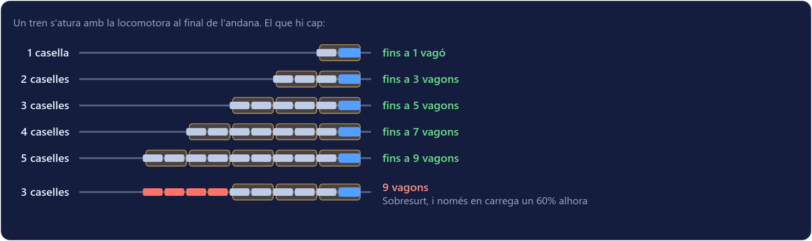

Estacions
Els quatre tipus, on van i com s'uneixen.
Els vehicles només carreguen i descarreguen a les estacions. N'hi ha quatre tipus, i es poden unir en una de sola.
| Estació | Eina | On va | Preu |
|---|---|---|---|
| 4 Carreteres | Sobre un tram recte de carretera. | 1.200 $ per casella | |
| 5 Ferrocarril | En terreny pla o sobre via recta. Fins a 12 caselles de llarg i 4 andanes en paral·lel. | 1.600 $ per casella | |
| 0 Ports | En un pendent de la riba que baixi recte fins a mar obert. | 2.600 $ | |
| Ports | Un aeròdrom de 3 x 2 en terreny pla. | 31.200 $ |
- R gira una estació abans de col·locar-la.
- Arrossega una estació de tren al llarg de la via per allargar-la i cap a un costat per afegir-hi andanes. Els trens trien tots sols una andana lliure.
- Els autobusos i camions fan cua l'un darrere l'altre, i trien una casella lliure d'una parada que en tingui diverses.
- Un tren més llarg que l'andana també s'hi atura, però els últims vagons sobresurten a la via del darrere i carrega i descarrega més a poc a poc. La finestra de compra i la del tren t'avisen. En una andana hi caben dos vagons per casella, menys un per la locomotora: 3 caselles admeten 5 vagons.
- Una estació pren el nom de la ciutat més propera.
- Cada casella d'estació costa 30 $ al mes de manteniment.
Quina llargada d'andana?


Unir estacions
- Construeix una casella d'estació just al costat d'una de teva i totes dues s'uneixen: un nom, una zona de cobertura i una sola pila de càrrega esperant.
- Així es fa un intercanviador: una estació de tren amb una parada d'autobús, un moll o un aeroport enganxats.
- També serveix per estirar una zona de cobertura i arribar una mica més lluny.
- Una estació no es pot estendre més de 20 caselles de banda a banda. Una casella construïda més lluny comença una estació nova.
Següent: Zona de cobertura i Valoració de les estacions.